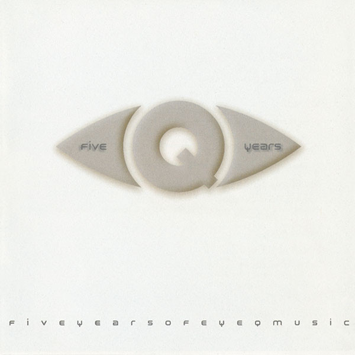

Superbe compilation des plus beaux titres du feu label EyeQ, Five Years Of Eye-Q Music est à posséder de toute urgence. On retrouve sur ce double album, outre Sven Väth (fondateur du label), Cybordelics (superbe !), Hardfloor, Zyon, Vernon mais également des morceaux ambient planante (notamment le titre des Baked Beans). Malheureusement il semblerait que, comme le label a déposé le bilan, Five Years Of Eye-Q Music soit dure à trouver. Mais si jamais vous réussissez à mettre la main dessus, n’hésitez pas à l’acheter. C’est impossible que vous soyez déçu.
Divers Artistes, Five Years Of EyeQ Music - 2 x [60′] - label Eye-Q
